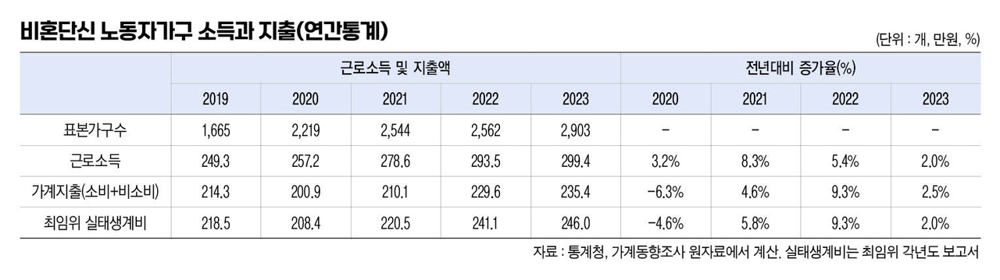
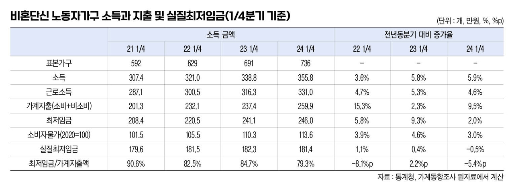

박영삼의 통계로 보는 노동
비혼단신 노동자가구 올해 1분기 가계지출 9.5% 증가
최임위 보고된 지난해 실태생계비 상승폭 2.0%과 큰 차이
지난 4일 열린 최저임금위원회 전원회의에서는 비혼단신 노동자가구 실태생계비 보고서가 심의됐다. 보고서를 작성한 한국통계학회는 통계청의 가계동향조사 원자료 분석 결과, 2023년 기준 비혼단신 노동자가구의 실태생계비가 245만9천769원이라고 보고했다. 2022년의 241만1천320원에 비해 2.0% 오른 금액으로 지난해에 보고됐던 2022년 실태생계비 상승폭 9.3%보다는 크게 낮아진 수치다.
한국통계학회가 분석대상으로 삼은 것은 분기단위로 작성되는 가계동향조사 자료를 연간으로 통합한 것으로, 1인 가구 중 임금노동자로 취업 중이면서 자가소유 주택이 아닌 전월세로 거주하는 가구들이다. 분석에 사용됐던 2천903개 표본가구들은 우리나라 2천157만9천 가구 중 281만 가구를 대표하며 전체 가구의 13.0%를 차지한다.
지난해 실태생계비 상승폭 하락, 낮은 소득증가율 영향
통계청 원자료를 분석해 본 결과 비혼단신 노동자가구의 2023년 근로소득은 299만4천원으로 전년의 293만5천원에 비해 2.0% 증가에 그친 것으로 나타난다. 실태생계비와 근로소득 증가율이 동일한 수준이다. 근로소득 증가율은 2021년 8.3%, 2022년 5.4%에 이어 증가폭이 계속 줄어들고 있다. 이에 따라 가계총지출은 2020년 코로나19 당시 –6.3%를 기록했다가 2021년에는 4.6% 증가로 회복한 뒤 2022년에는 9.3% 늘어났으나 2023년에는 2.5% 증가에 그쳤다. 최저임금위의 실태생계비는 2020년 –4.6%, 2021년 5.8%, 2022년 9.3%, 2023년 2.0% 상승한 것으로 보고됐다.

최저임금법에서는 ‘근로자의 생계비, 유사 근로자의 임금, 노동생산성 및 소득분배율’ 4가지 요소를 최저임금의 결정기준으로 제시하고 있다. 또한 최저임금위는 전년도 실태생계비를 참고하면서 다음해 최저임금을 결정하기 때문에 2년간의 시차가 존재한다. 따라서 심의가 이뤄지는 당해연도 소비자물가 상승률 전망치까지 반영해서 다음 해의 최저임금 인상률을 결정해야 한다. 하지만 실태생계비와 물가상승률이 최저임금 결정 과정에서 명시적으로 고려된 적은 거의 없다.
물가상승 압력 지속, 비혼단신 가구 지출억제 대응에 한계
마침 지난달 25일 올해 1분기 가계동향조사 결과가 발표됐기 때문에 가장 최신 자료로 최저임금와 동일한 기준의 비혼단신 노동자가구의 소득과 지출, 그리고 현 시점에서 물가상승을 감안한 최저임금의 가치를 확인해 볼 수 있다. 표본가구수는 분기 자료이기 때문에 2024년 1분기 기준 736개 표본가구가 분석대상이다.
2024년 1분기 비혼단신 노동자가구의 총소득은 362만5천원, 근로소득은 331만원으로 전년 동분기의 342만2천원과 316만3천원에 비해 각각 5.9%, 4.6% 증가했다. 한편 가계지출액은 259만9천원으로 전년(237만4천원) 대비 22만5천원, 9.5% 증가한 것으로 나타난다. 지난해 연간 실태생계비 증가율 2.0%나 지난해 1분기 가계지출 증가율 2.3%보다 가계지출이 크게 늘고 있다. 지출항목별로는 음식숙박(3만6천원), 가정용품(3만3천원), 교통(2만8천원) 등의 소비지출액이 크게 늘었다. 대부분 물가상승의 영향을 크게 받는 지출항목들이다.

실질최저임금 1분기 기준 첫 마이너스 기록
이에 따라 1분기 기준으로 올해 최저임금 월액 206만1천원을 가계지출액과 비교하면 최저임금으로 가계지출액을 충족하는 비율은 79.3% 수준으로 떨어진 상태다. 2021년에 이 비율이 90.6%였던 것에 비해 10% 포인트 이상 최저임금 충족률이 하락한 것이다. 이와 함께 소비자물가지수를 적용한 실질최저임금은 올해 1분기에 전년대비 증가율이 –0.5%로 1분기 기준으로는 처음으로 마이너스를 기록하고 있다.

가장 핵심적인 결정기준이어야 할 실태생계비와 소비자물가 상승률이 최저임금 결정에 제대로 반영되지 않은 채, 최저임금과 생계비 간 괴리가 점점 커져 왔다. 이러한 상황에서 마침 전년도 실태생계비 증가율이 하락했다고 해서 최저임금 인상 억제의 이유로 활용하려 한다면 올해 들어 가파르게 상승하고 있는 가계지출액을 반드시 함께 살펴봐야 할 것이다.
지난해 가계지출이 주춤했던 것은 근로소득 증가율이 낮아졌기 때문에 소비지출을 억제한 결과다. 올해 들어 가계지출이 가파르게 증가하고 있는 것은 더 이상 물가상승의 압력을 지출 억제만으로 대응하기 어려운 상황이기 때문으로 봐야 할 것이다.
고려대 노동문제연구소 노동데이터센터장 (youngsampk@gmail.com)